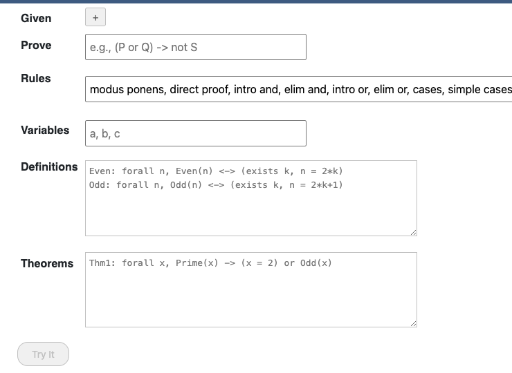
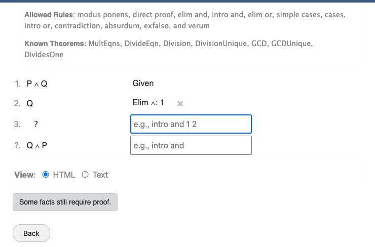
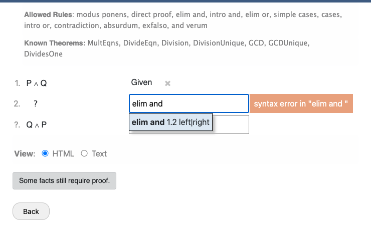
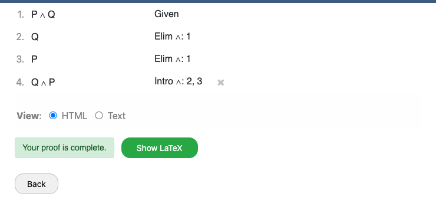

Theorem Definition Panel
The theorem panel is the first screen you see. It contains all the fields needed to define the theorem you want to prove.

Each field validates your input in real time. Fields with syntax errors turn red to indicate a problem.
Given Fields (Hypotheses)
The "Given" section lets you list the hypotheses of your theorem. These are propositions assumed to be true at the start of your proof.
- Click the + button to add a new given.
- Click the × button next to any given to remove it.
- Type a proposition using the declarations language.
- Leave this section empty if your theorem has no hypotheses.
Example: (P and Q) -> not S
Prove Field (Conclusion)
Enter the proposition you want to prove. This becomes the main goal in the proof editor.
Example: (P or Q) -> not S
Rules Field
A comma-separated list of which inference rules are allowed in your proof. This lets instructors restrict proofs to specific techniques.
- Leave empty to allow all known rules.
- The default set is the rules of intuitionistic propositional logic:
modus ponens, direct proof, intro and, elim and, intro or, elim or, cases, simple cases, contradiction, absurdum, exfalso, verum.
Variables Field
A comma-separated list of free variable names used in the theorem. Variables
are lowercase identifiers (e.g., a, b, c).
- Leave empty if your theorem has no free variables.
- Any variable that appears free (not bound by a quantifier) in the givens or conclusion must be declared here, or Cozy will show an error message.
Definitions Field
Custom definitions to use in the proof. Each definition goes on its own line
in the format Name: proposition.
A definition must be a universally quantified biconditional (using <->).
Example:
Even: forall n, Even(n) <-> (exists k, n = 2*k)
Odd: forall n, Odd(n) <-> (exists k, n = 2*k+1)When left empty, Cozy loads the default definitions: Even, Odd, Congruent, Divides, and Prime.
Theorems Field
Custom theorems available to cite during the proof. Same format as definitions:
Name: proposition, one per line.
A theorem must be a universally quantified implication (using ->).
Example:
Thm1: forall x, Prime(x) -> (x = 2) or Odd(x)When left empty, Cozy loads the default integer theorems (see Built-in Definitions & Theorems).
Try It / Back Buttons
The Try It button is enabled only when all fields are valid and the Prove field is non-empty. Clicking it enters the proof editor.
The Back button in the proof editor returns to the theorem panel. Note that your proof progress is not saved when going back.
Proof Editor
The proof editor is where you construct your proof. It displays a table of proof lines, each with a line number, proposition, and the rule that justified it.

Preamble
Above the proof lines, the preamble shows:
- Allowed Rules — the inference rules you can use.
- Known Variables — any declared free variables (shown only if non-empty).
- Known Theorems — theorems available for citing (shown only if non-empty).
Forward Reasoning
Forward reasoning works top-down: you start from known facts (givens and previously proven lines) and derive new facts.
- Given lines appear at the top, labeled with the
givenrule. - Below the given lines is a forward working line — a text input where you type your next rule.
- Rules reference earlier lines by their line numbers
(e.g.,
modus ponens 1 2). - When you type a valid rule and press Enter (or select from the dropdown), the new fact appears as a new line and a fresh working line opens below it.
Backward Reasoning
Backward reasoning works bottom-up: you start from the goal and break it into simpler subgoals.
- Below the forward working line, you'll see backward working lines for each unproven goal.
- Backward lines are shown in a different style, with the goal proposition displayed and an input field for the tactic.
- When you apply a backward rule, the goal may split into subgoals, each getting its own backward working line.
- Once all subgoals of a backward rule are resolved (by forward reasoning reaching them), Cozy automatically converts backward reasoning into forward lines.
Auto-Suggest Dropdown
As you type in a working line, Cozy shows a dropdown of valid completions. The suggestions are context-aware — they only show rules that are allowed and syntactically valid given what you've typed so far.

- Use the arrow keys to navigate suggestions.
- Press Enter or Tab to accept a suggestion.
- Continue typing to narrow down the suggestions.
Removing Steps
You can undo your most recent steps:
- The last forward line (if it's not a given/assumption) shows an × button to remove it.
- Backward rules whose children are all open (unresolved) also show an × button to undo them.
Subproofs
Some rules (like direct proof, absurdum, intro forall,
and elim exists) create subproofs — nested proof
contexts with their own assumptions and goals.
- Subproof lines are indented to show nesting.
- Line numbers use dot notation: line 2 of a subproof at line 3 is
3.2. - Within a subproof, you can reference lines from outer proofs by their full line numbers.
- Subproofs for
intro forallandelim existsbegin with "Let x be arbitrary." to introduce the new variable.
Proof Completion
Cozy checks whether the goal has been proven after every step. When the proof is complete:
- A green "Your proof is complete." banner appears.
- The forward and backward working lines disappear.
- A Show LaTeX button appears to export a formal LaTeX rendering.

View Modes
Below the proof, radio buttons let you switch between two display modes:
- HTML — Propositions are rendered with styled formatting: serif fonts for logical operators, sans-serif for predicates, etc.
- Text — Propositions are shown as plain monospace text, matching what you type in the input fields.
When the proof is complete, clicking Show LaTeX displays a formal LaTeX rendering you can copy into a document. Click Hide LaTeX to collapse it.